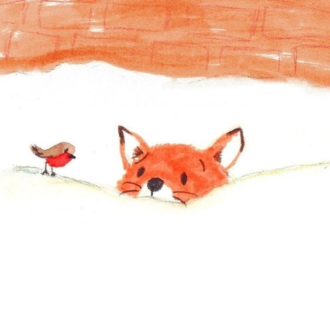

Islomjon Shukhratov
I am twetny years old. I live in Tashkent and study at Inha Univeristy in Tashkent.
Classes in which I am enrolled currently:
- System Programming
- Computer Architecture
- Internet Programming
- Elctronic Circuits
- Academic English
- Engineering Maths
- History
Top-3 movies
Top-3 books
Top-3 artists
Images that represent my happiness
